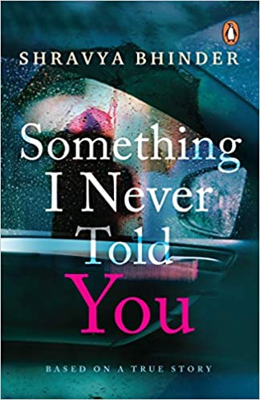

BOOK GALLAERY
The Pursuit of Happiness
Daniel G. Brinton
“Half of happiness is the recognition that we are happy; and half of misery is the forgetting how many causes
of happiness we have.”From happiness as the aim of life to its dependency on nature, luck, our own selves,
and others, Daniel G. Brinton’s The Pursuit of Happiness provides rare and valuable insights on this most
sought-after emotion and the pursuit to attain it
The Power of A Positive Attitude
Roger Fritz
Have you ever wondered how your attitude can influence your Success and failure? Have you ever considered
the power of saying I Can, I must, i will? “I am not saying a positive attitude can make you
successful. I am saying a positive attitude will make you successful
Pride & Prejudice
Jane Austen
hrough this tale about two warring hearts, Austen weaves a witty satire about life in eighteenth century
England. And through it was published more than two centuries ago, Pride and Prejudice continues to enthrall
readers to this very day.
Something I Never Told You

Shravya Bhinder
When in love, you tend to take each other for granted, and sometimes, that can cost you a lifetime of
togetherness . . .
Ronnie knew that his first crush was way out of his league, and yet he pursued and wooed Adira. Shyly and
from a distance in the beginning, and more persuasively later
One Day, Life Will Change
Saranya Umakanthan
Love... does it mean running around the trees or vacationing in Switzerland, singing tra-la-la in the snow?
Is it about gifting teddy bears and roses to your partner?After losing everything she holds dear... her
love, her parents, and even her singing, Samaira is dejected. She is at her lowest point in life and has no
idea what she wants.Vivian is the successful and dynamic head of Creative Tanks and dreams of being the top
entrepreneur in India
The Girl With No Dreams

Deepak Gupta
I always asked mom about my father but she always told me, ‘Your father came for a night to ruin my whole
life.' A Story about Dreams, Hope and Death. Oh, I am sorry. I’m extremely sorry; I usually forget to
introduce myself. I’m Amanda, a plain sailing girl who loves to explore love and life in an adventurous way.